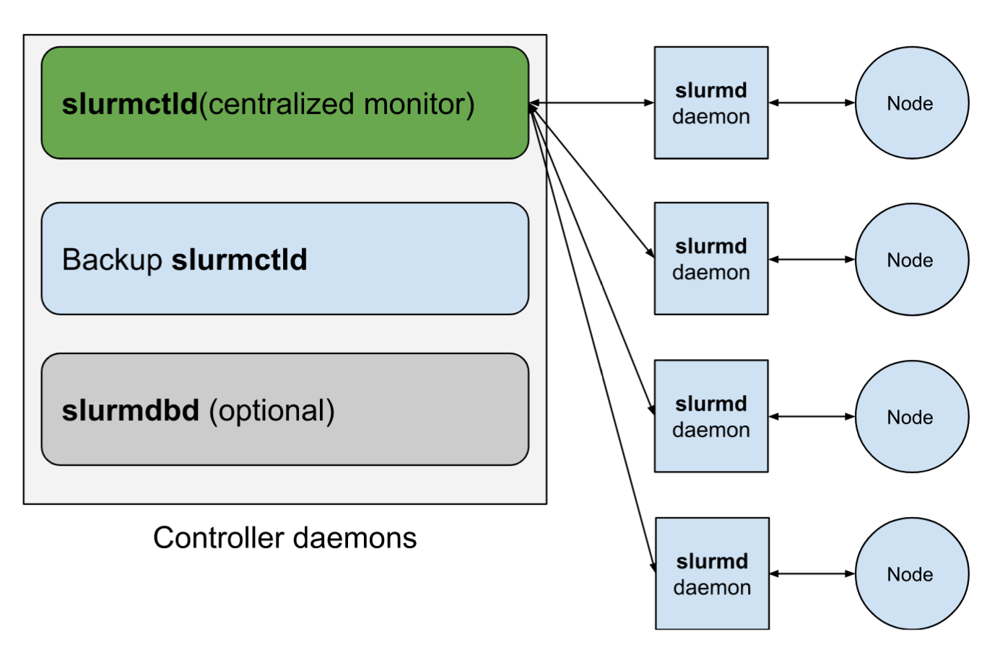

SLURM and HPC.

SLURM Workload Manager
SLURM (formerly known as Simple Linux Utility for Resource Management) is an open-source job scheduling system for Linux clusters.
It does not require kernel modification and is relatively self contained. It has three key functions:
Allocation of access to resources (compute nodes) to users for a defined period of time.
Providing a framework that allows for starting and executing jobs, including parallel computing processes.
Queue management to arbitrate resource contention.
SLURM and HPC clusters
SLURM is uniquely suited for use in HPC clusters, due to its ability to facilitate efficient utilization of the resources available for an HPC cluster.
SLURM places jobs/tasks in a queue, and access to resources is allowed based on the processes that are already running at the time, which is very well suited for an HPC cluster, where resources are under heavy usage.

SLURM makes it super easy to simplify and streamline the job submission process, without having to rely on complicated Python or Bash scripting. It also allows for proper resource allocation depending on the job’s requirements, which is essential in an HPC environment, especially with multiple people using it.
SLURM Directives
SLURM allows for specifying commands in the SLURM scripts that allow it to arbitrate job allocation and resource management. These commands are present at the top of a SLURM script, preceeded by #SBATCH.
These SBATCH commands and how specific they can get are the lynchpin of SLURM’s ability to perform resource and task arbitration. There are a large number of #SBATCH commands.
Of these commands, the most relevant are:
| Command | Utility |
|---|---|
| -N or --nodes=minnodes[-maxnodes] | Request that a minimum of N nodes be allocated |
| -n or --ntasks=number | Request sufficient resources to launch a maximum of number tasks |
| --mem-per-node=#MB or --mem-per-cpu=#MB | Specify minimum memory requirement per node or per CPU |
| --ntasks-per-node=ntasks | Request the maximum ntasks be invoked on each node |
| –mail-user=email_adress | Send emails to the specified address for job-related events |
Based on these request parameters, SLURM can queue and allocate jobs to run on the available compute nodes. Each job that SLURM runs has it’s own job ID.
Submitted jobs by the user can be accessed by the command squeue -u <USERNAME>. These resulting output shows the job ID associated with each job.
SLURM job arrays
If the same job needs to be run several times for different files, or if the same script needs to be run with several times with different parameters, SLURM job arrays allow for each individual job to be run in parallel without the need to submit an external script, or to run an iterative loop.
Here, the #SBATCH command --array is used along with other SLURM directives. For example, #SBATCH --array=1-20 instructs the SLURM central manager to run the script 20 times. 20 independent tasks are created, that will run in parallel. These tasks are all assigned their own unique task ID, in addition to a common job ID (since these tasks are all submitted as part of a single job).
SLURM uses an environmental variable that is unique for each task in the array. This variable is called $SLURM_ARRAY_TASK_ID.
SLURM Scripts
The following is an example of a simple SLURM script. A folder named text_files was created, and that contained text files in the format chr{x}.txt, where x could be from 1 to 22, as well as X, Y and M. The purpose of this script is to read the absolute location of each text file, and print that in an output file called output.txt.
#!/bin/bash
#SBATCH --mail-user=XXX@gmail.com
#SBATCH --mail-type=ALL
#SBATCH --job-name=array_test
#SBATCH --nodes 1
#SBATCH --ntasks 25
#SBATCH --mem 24g
#SBATCH --array=1-25
#Specifying path to array testing folder
config="/home/nxk562/slurm_array_testing/text_files"
#Setting the array testing folder as the working directory
cd "$config"
#Using the index to iterate through the text files.
#There are 25 text files.
#This command uses "ls -1" to obtain a list of files.
#sed -n "${SLURM_ARRAY_TASK_ID}p" uses the array task id as sort of a numerical index. It selects the line of the
#ls output associated with the array ID.
text_file=$(ls | sed -n "${SLURM_ARRAY_TASK_ID}p")
#Obtaining the absolute location of the text files
text_file_location="${config}/${text_file}"
echo "$text_file_location"
echo "."
echo "."
echo "."
echo "."
#Printing output
echo "$text_file_location" >> /home/nxk562/slurm_array_testing/output.txtLet’s look at this code. The #SBATCH options here are:
--mail-user=XXX@gmail.com, which directs SLURM to send requested emails to the specified email address.--mail-type=ALL, which directs SLURM to notify user by email when certain event types occur. These can include NONE, BEGIN, END, FAIL, ARRAY_TASKS.--job-name=array_test, which provides a name for the job to go along with the job ID.--nodes=1, which directs SLURM to request a single compute node.--ntasks=25, which directs SLURM to request a node which can handle running a minimum of 25 tasks simultaneously.--mem 24g, which specifies the real memory required per node.--array=1-25, which specifies that there are 25 jobs to be executed with identical parameters.
The rest of the code uses $SLURM_ARRAY_TASK_ID as a numerical variable to sort through the files in the text_files folder using the ls command piped to a sed command. sed -n "${SLURM_ARRAY_TASK_ID}p" allows for selection of the line of output from ls associated with the $SLURM_ARRAY_TASK_ID variable.
For example, when $SLURM_ARRAY_TASK_ID is equal to 1, the SLURM script executes ls | sed -n "1p" , which takes the first line of output from the ls command, and prints it to output.txt.
SLURM Output Files
By default, SLURM produces output files in the format slurm-<job_ID>.out.
For task arrays within a job, each task in the array will be associated with its own output file in the format slurm-<job_ID>_<task_ID>.out.
Submitting, viewing and cancelling SLURM jobs
SLURM jobs are submitted using the sbatch command followed by the script.
SLURM jobs that have been submitted can be viewed by the command squeue -u <username>.
SLURM jobs can also be cancelled using the scancel <job_ID> command.
References
SLURM documentation can be found with great detail here. This post is intended to be a very basic example of SLURM, and is meant to motivate further interest in SLURM and how SLURM job arrays are specifically suited to a HPC environment with multiple users.